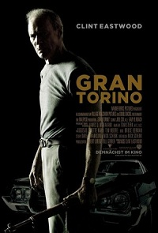

Gran Torino
Director :
Clint EastwoodStarring :
Clint Eastwood, Bee Vang, Dreama Walker, Ahney Her...Length :
1h51minGenre :
Thriller, DramaSynopsis :
Walt Kowalski is a widower who holds onto his prejudices despite the changes in his Michigan neighborhood and the world around him. Kowalski is a grumpy, tough-minded, unhappy an old man, who can't get along with either his kids or his neighbors, a Korean War veteran whose prize possession is a 1972 Gran Torino he keeps in mint condition. When his neighbor Thao, a young Hmong teenager under pressure from his gang member cousin, tries to steal his Gran Torino, Kowalski sets out to reform the youth. Drawn against his will into the life of Thao's family, Kowalski is soon taking steps to protect them from the gangs that infest their neighborhood.
Schedule :
From Monday to Friday : 14h | 16h30 | 21h
Saturday, Sunday : 14h | 16h30 | 20h30 | 23h